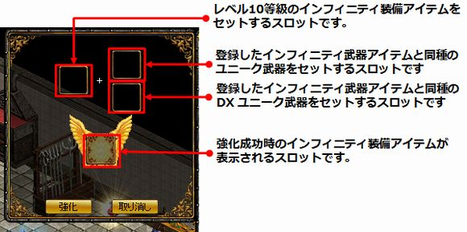
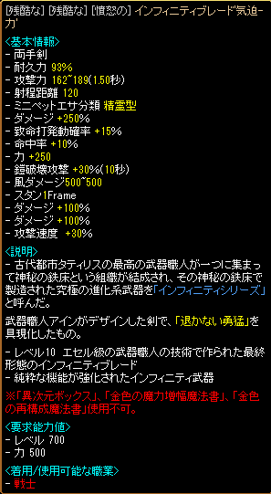

インフィニティULT
IF10を更に強化してインフィニティULT装備にできる武器強化システムです。インフィニティULT一覧
| 強化関連アイテム | 入手方法 | |
|---|---|---|
 |
謎の錬成日誌 | キャラクターLv-100以上のモンスターを討伐時、稀にドロップ |
 |
ユニーク錬成秘法書 |
- 取引不可アイテム インフィニティULT強化に必要なユニークレシピ。 謎の錬成日誌を入手して、古都ブルンネンシュティグ 武器職人サナ（98.53）または冒険家協会ブルンネンシュティグ本部 武器職人セリー（64.21）に話すと、クエスト「武器職人の恩返し」を受諾、クエスト報酬として獲得できる。 |
※「武器職人の恩返し」クエストで魔力インク2000個とLv-50のモンスター300匹の討伐が必要になります。
ユニーク錬成秘法書を使用してIF10やIF10[Nx]を強化するには、同種の武器のDXユニーク1個とユニーク1個が必要です。
例) インフィニティソード‘勇気’(IF10)を強化するには、DXユニーク片手剣とユニーク片手剣も使います。

IF10[Nx]を強化してもインフィニティULT[Nx]にはならず、インフィニティULTになります。
強化に失敗すると、IF10は保持されますが、DXユニークとユニークアイテムは消滅します。
成功しても失敗しても、すべてのオプション・ブラックファイヤー装備強化オプションが削除されます。
ユニークレシピを使用して強化すると、3タイプいずれかのインフィニティULTになります。
武器ダメージとオプション数値の両方強化されたインフィニティULTのみ錬成可能です。
両方強化されたインフィニティULTのみ、「異次元ボックス」「金のエンチャント文書」を使用可能。
「金色の魔力増幅魔法書」、「金色の再構成魔法書」は使用不可。（※金増幅・金再構成については韓国情報のため、要検証）
[参考] 2018/2/21(水)14:00 定期メンテナンス終了 ver0.0686アップデート適用のお知らせ
| インフィニティULTの種類 | |
|---|---|
| 武器ダメージが約30％増加したインフィニティULT | |
| オプション数値が約30％増加したインフィニティULT | |
| 武器ダメージとオプション数値の両方が約24％増加したインフィニティULT | |
IFULTサンプル
2018.12アプデで協会OPなども付与できるようになりました。
ULT装備扱いのため、装備要求Lv計算はULT装備計算で行われます。
インフィニティULT一覧
鏡の魔法書は使用不可。剣士 / 戦士
ランサー / アーチャー
ウィザード / ウルフマン
ビショップ / 追放天使
ビーストテイマー / サマナー
シーフ / 武道家
プリンセス / リトルウィッチ
ネクロマンサー / 悪魔
霊術師 / 闘士
光奏師 / 獣人
メイド / 黒魔術師
マスケッティア / アルケミスト
 インフィニティブレード‘気迫’-技
インフィニティブレード‘気迫’-技
 インフィニティブレード‘気迫’-極
インフィニティブレード‘気迫’-極
 インフィニティグローブ‘真理’-技
インフィニティグローブ‘真理’-技
 インフィニティクロー‘開放’-力
インフィニティクロー‘開放’-力
 インフィニティクロー‘開放’-極
インフィニティクロー‘開放’-極
 インフィニティバイブル‘光彩’-力
インフィニティバイブル‘光彩’-力
 インフィニティダークコア‘満月’-極
インフィニティダークコア‘満月’-極
 インフィニティストーン‘深淵’-力
インフィニティストーン‘深淵’-力
 インフィニティストーン‘深淵’-技
インフィニティストーン‘深淵’-技
 インフィニティストーン‘深淵’-極
インフィニティストーン‘深淵’-極
計算の方法：属性攻撃など特殊なOP以外を各条件に従って掛け算して、小数点以下を切捨。
解放OPは1解放目以外IF10とほぼ同じです。
説明文は同じ文面が何度も並ぶのを回避するために割愛。IF10に以下の文章が付与されます。
* ベース強化（赤）：純粋な機能が強化されたインフィニティ武器
* オプション強化（青）：効果が強化されたインフィニティ武器
* 両方強化(黄)：全ての機能が強化されたインフィニティ武器
[参考]ユニークレシピ(公式サイト)